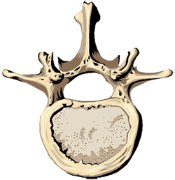

Tudo sobre a coluna vertebral.

A porção mais volumosa e cilindróide da vértebra é anterior, e o conjunto das apófises ou saliências ligadas a esta parte do osso dirige-se para trás e para baixo.
Todas as vértebras (com excepção das duas primeiras, respectivamente o atlas e áxis) apresentam o corpo vertebral, o buraco vertebral, a apófise espinhosa, as apófises transversas, as apófises articulares, as lâminas vertebrais e os pedículos. O conjunto de todas as apófises, as lâminas e os pedículos constitui o arco vertebral (Arcus vertebralis) e a sobreposição de todos os buracos vertebrais origina o canal vertebral ou canal raquidiano (Canalis vertebralis).
O corpo vertebral (Corpus vertebralis), tem a forma de um segmento cilíndrico, com uma face superior, uma face inferior e uma face circunferencial.
O buraco vertebral (Foramen vertebrale) encontra-se situado entre o corpo vertebral adiante e o arco vertebral atrás e aos lados.
A apófise espinhosa (Processus spinosus) apresenta a forma de uma espinha, ímpar e mediana, que se origina no ângulo de união das lâminas.
As apófises transversas (Processus transversus), em número de duas, uma direita e outra esquerda, dirigem-se transversalmente para fora.
As apófises articulares (Processus articularis ou Zygapophysis), em número de quatro, sendo duas superiores e duas inferiores, implantam-se no ponto de união dos pedículos e das lâminas. As apófises articulares superiores (Processus articularis superior) articulam-se com as apófises articulares inferiores das vértebras suprajacentes e as apófises articulares inferiores (Processus articularis inferior) articulam-se com as apófises articulares superiores das vértebras infrajacentes.
As lâminas vertebrais (Lamina arcos vertebralis), em número de duas, uma direita e outra esquerda, têm uma forma quadrilátera e constituem a parede póstero-Iateral do buraco vertebral.
Os pedículos (Pediculus arcos vertebralis) são duas porções ósseas, finas e estreitas, que unem, de cada lado, o corpo vertebral à base da apófise transversa, lâmina e apófises articulares. Cada pedículo apresenta em cada bordo uma chanfradura (Incisura vertebralis superior/inferior), e cada uma constitui com a chanfradura da vértebra adjacente um orifício, o buraco de conjugação (Foramen intervertebrale).